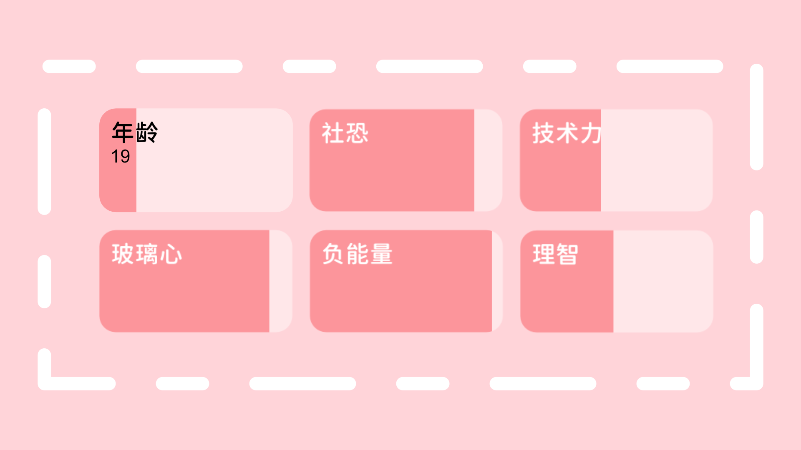

Hi! 正如你所见，这位是 Leer，也可以叫他 Xiao_Le
说着“这世界真无聊”结果还是被迫来到这世界的「东西」
《关于在12年的寒窗苦读后成为一具行尸走肉的事》
计划在 30 岁生日 [2032.05.27] 离开这个世界
他是
osu! 音乐软件用户 业余 OpenStreetMap Mapper 想学日语的 没有做出任何贡献的 自我否定的 快要放弃一切的 杂鱼
成就
- 什么都没做啊啊啊啊啊
能力

关于这个博客
只是想将这个地方作为一个树洞，来分享自己的各种想法，即便是现实的我离开了这个世界，这个页面也将存在着。以此作为数字化身，让他人了解我的一切，证明曾经有一个想要变得有趣的人存在过。
感谢
Github提供托管服务Cloudflare提供网站的 CDN 以及域名的托管Fluid提供优秀的主题- 由
Hexo驱动 - The homepage background photo was shot by
Aki Nakazawa - 首页 slogan 由
一言: Hitokoto提供（内容不代表个人观点🌚）